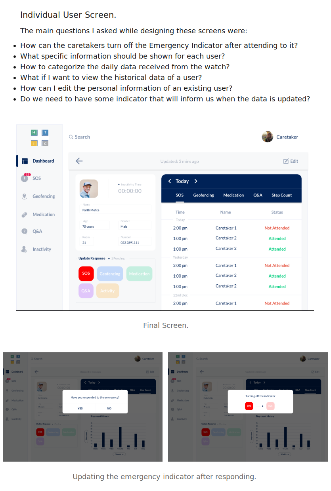
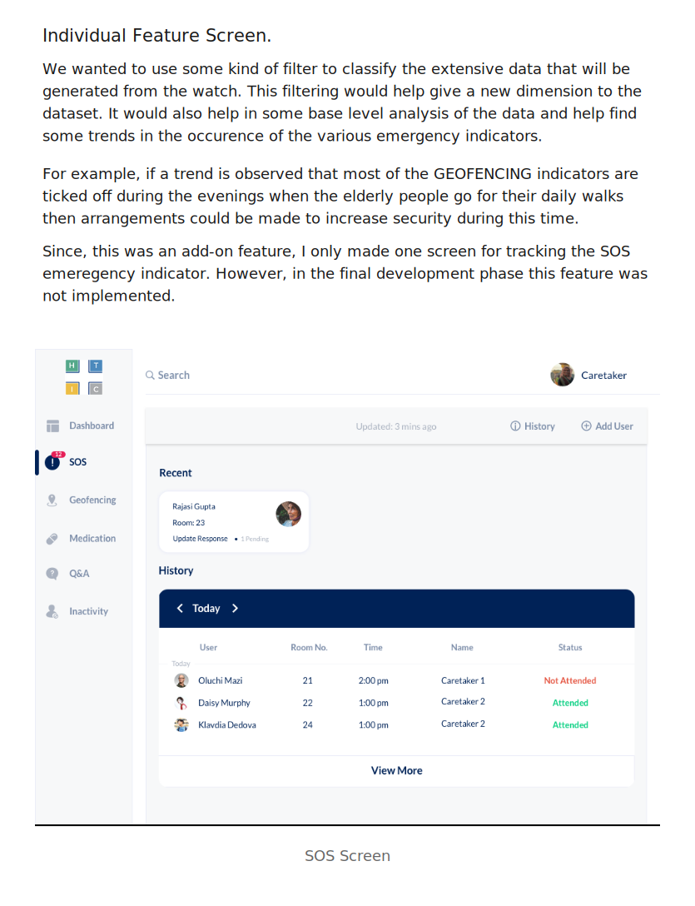
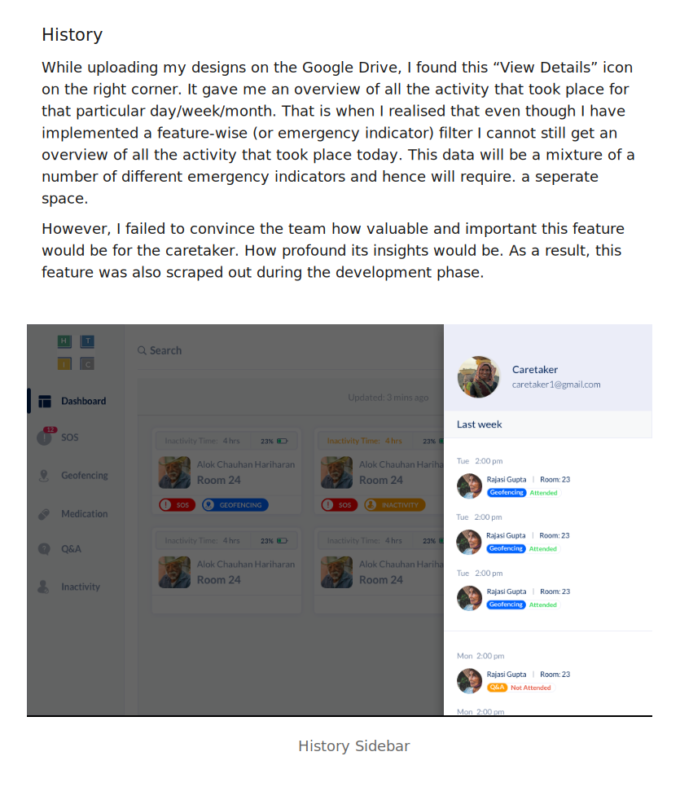
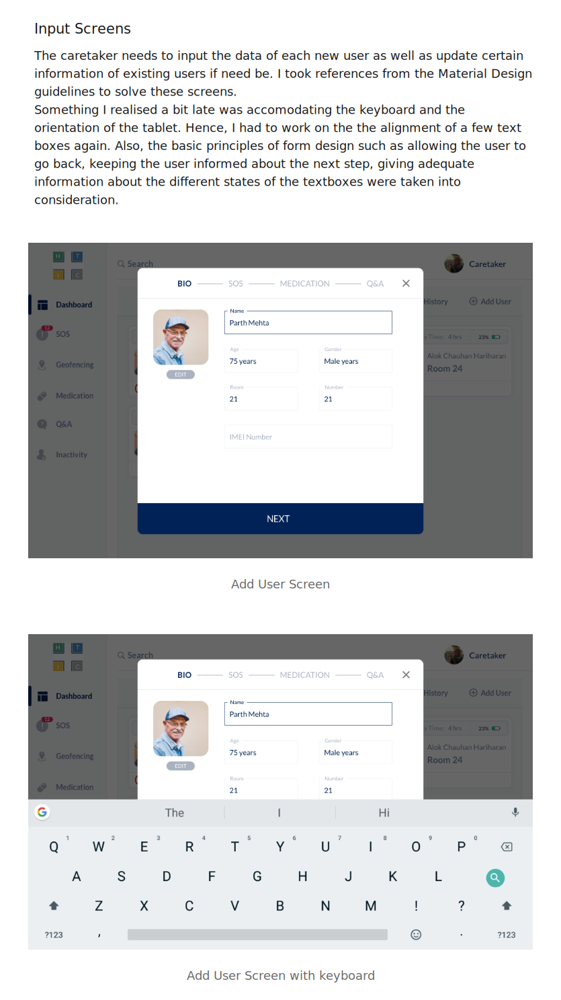
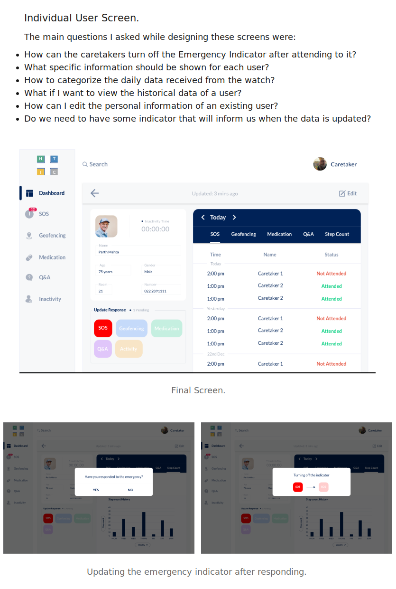
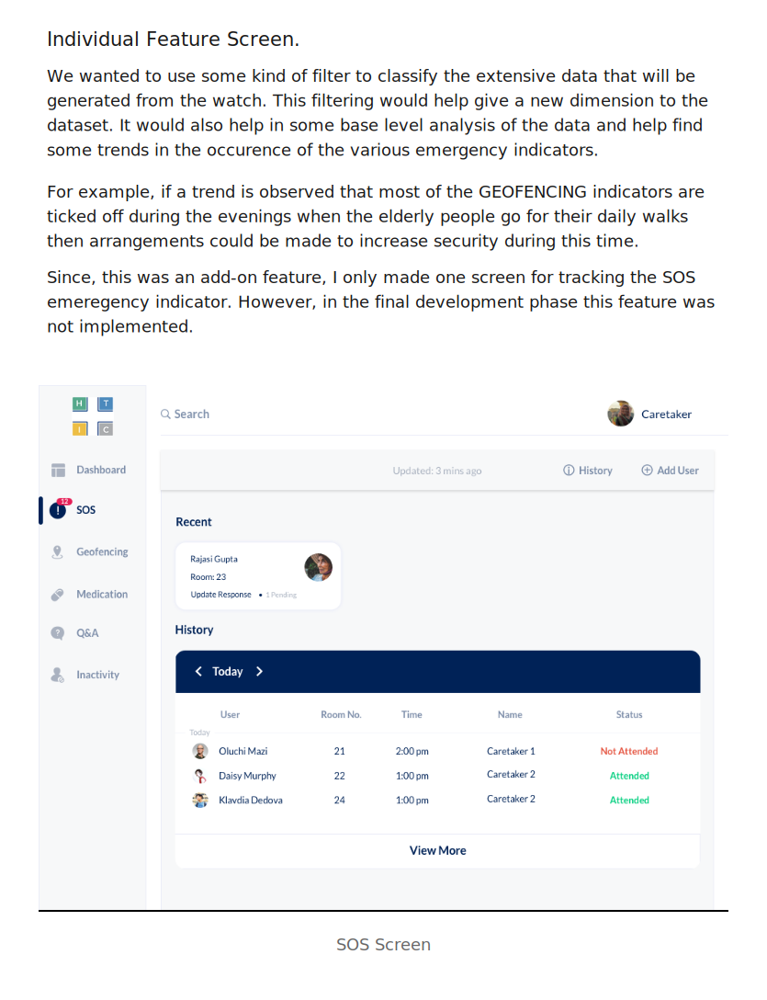
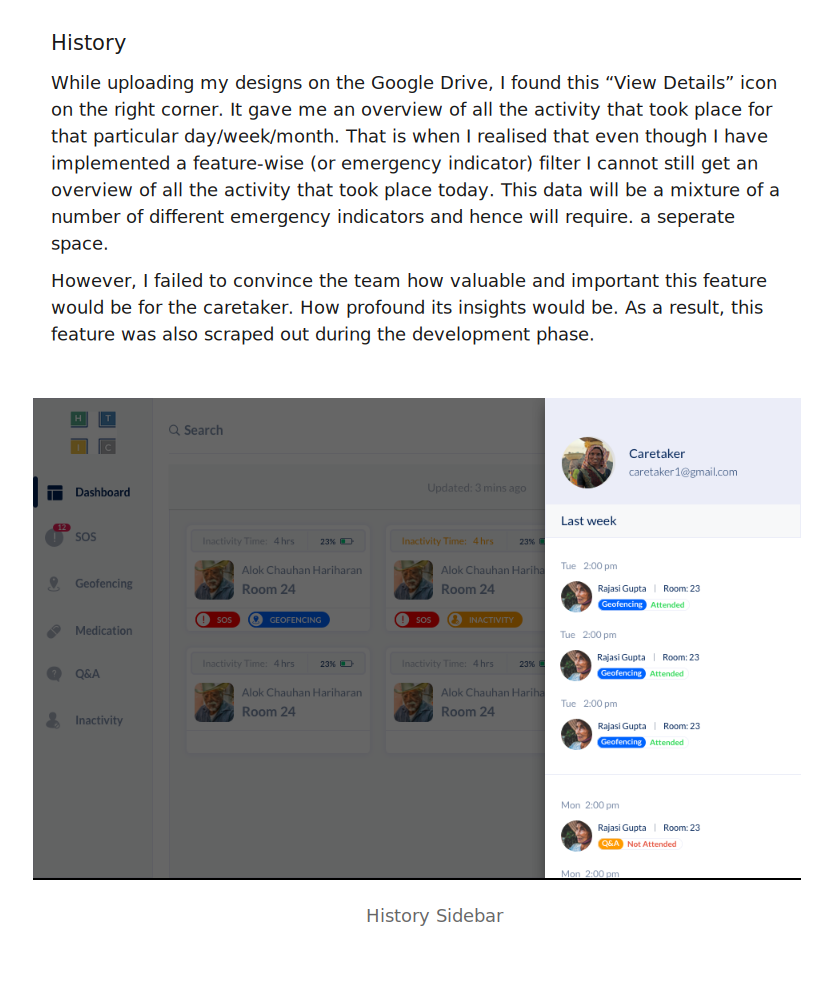
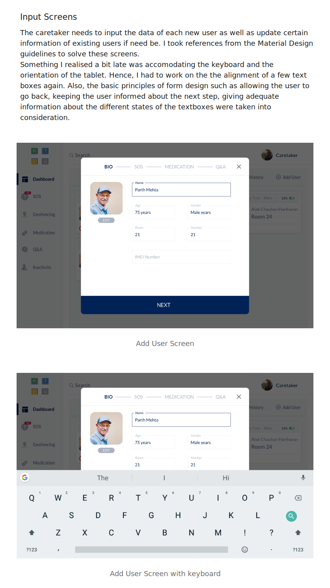

The objective of this project was to provide the elderly with the ability to lead more independent lives, with simple technological aids.
My role
User research
Wireframes
Visual Design
Prototyping
Devices
Android Tablet
Smart watch
Mobile Application
Title
Lead Designer
Problem.
The exponential rise of population over the last few decades has led a large number of elderly people, of whom a significant number do not have a good enough support system in place to provide them with sufficient welfare to be able lead comfortable lives. It is even more prominent in India, with the rise in the trend of nuclear families.
The family members usually look towards old age homes or house nursing agencies for solutions, but these provisions are very small in number and extremely unorganized, leading to a sub optimum healthcare for the elderly. Moreover, health insurance in India is significantly limited and widely neglected when it comes to hospitalization and geriatric care, despite the rapid rise in the number of elderly people.
The key challenges are to provide them with access to facilities that help them lead independent lives.
Solution and Approach.
Being a remote internship, I was not actively involved in the research phase of the project. A project brief was handed over to me along with the findings of the research conducted by the HTIC team in MADRAS. My role was to make sense of the data collected.
After understanding the data collected, I presented my findings to the team using USER PERSONAS. I specifically choose to represent my findings with the help of “user personas” since the team was well-versed with the different scenarios when and how the product will be used but were quite skeptical about the attributes, ambitions and feelings of our users.
There are 3 main user personas that were discovered after the analysis of the research findings.
Rolling out solutions.
Elderly people need 24/7 support. Hence, a single caretaker looking after the needs of all the elderly people at the old age home will not be helpful. Secondly, elderly people are open to new technology. Hence, we concluded to make use of a smart watch. After this decision was made by the team we cross verified our predictions with the same user group and 90% of them were ready to use smart wearables
Caretakers were facing problems since they could not immediately respond to emergencies. Also, they only understood what kind of any emergency it is after reaching the room of the elderly person or when the neighbours of the patient would hear them calling for help and then call the caretaker. Since, the caretakers were using smart devices we decided to use a tablet to keep track of the elderly people. A tablet was used since it was portable as well as due to the large screen size a larger number of elderly people could be tracked at a single glance.
Family members were not getting daily updates from the old age home. In case of an emergency, most of the times the family members were informed very late and hence they could not help much. As a result, we decided that the live data received from the watch will be sent to the respective family members of these elderly people using a mobile application. Hence, now the family members could get notifications and daily health updates.
1. Wearable device for the elderly.
When a feasibility test was conducted amongst the elderly people for determining the wearable device that could be easily accepted by them, the most common answer was a pendent (elderly people in India commonly wear such an ornament around their neck) and a watch. After doing market research and consolidating with the finance team we decided to proceed with a smart watch.


 








{kind=link}
{kind=link}
{kind=link}
{kind=link}
{kind=link}